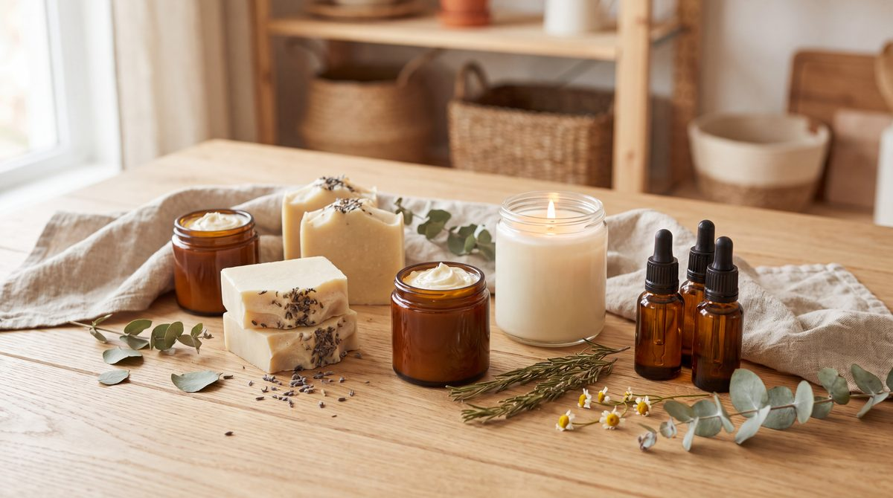

Free answer · Soapmaking
Why did my soap accelerate?
Certain ingredients and conditions speed up trace: some fragrance oils, citrus essential oils, sugars, milks, honey, juices, a water discount and high-coconut recipes.
Natural skincare · Soapmaking · Candle making
Learn the ingredients. Understand the formulas. Create with confidence.
NATURIVA is the learning home of The Art Of books by Nigar Rustamova. Every formula is taught with its reasoning: why an ingredient is there, why a temperature matters, and what to do when something goes wrong.

Read a formula like a formulator
Calming Chamomile Foam Cleanser
Select a phase to see what it does.
✦ AI Knowledge Assistant
Ask the way you'd ask a teacher. Answers come from the books, with the chapter to read next. When the books don't cover something, the assistant says so.
Free knowledge
Three real questions, answered from the books. If the free answers are this useful, imagine the full chapters.
Free answer · Soapmaking
Certain ingredients and conditions speed up trace: some fragrance oils, citrus essential oils, sugars, milks, honey, juices, a water discount and high-coconut recipes.
Free answer · Candle Making
The wick is usually too small for the container, so the melt pool never reaches the edges. Short burns make it worse.
Free answer · Ingredients
An oil in which dried botanicals have been steeped so it takes up their fat-soluble compounds, like calendula-infused oil.
The library
Each book starts with safety and foundations, then builds to complete projects, and explains every step.
The Art Of · Natural Skincare
Seventeen professional formulas, and the reasoning behind every one.
For: Beginners: the book states that no prior experience is needed.
The Art Of · Soapmaking
Seven chapters of theory before the first recipe.
For: Complete beginners: the book says no prior experience is needed, and it starts with lye safety.
The Art Of · Candle Making
Waxes, wicks and temperatures first. Then cakes, cocktails and botanicals.
For: Beginners and intermediate candle makers.
How the books teach
Healthy skin's acid mantle sits here, so the cleansers do too. The toner goes lower, to 3.8–4.2, because salicylic acid only exfoliates below 4.5.
Peptides, proteins and soothing actives go into the cooling cream, not the hot phases, so they survive the process.
The oil left free in a bar of soap, for mildness. Coconut can take 20%; olive would go rancid at that level.
The share of fragrance in coconut wax, added at 55–60 °C and cured 7–10 days so the scent binds.
What's available
Free, here
Knowledge articles, the FAQ, the ingredient glossary, learning paths and the AI Knowledge Assistant.
Start learningThe books
Every chapter, formula, temperature and troubleshooting note, in the order the author teaches them.
Explore the libraryLater
Courses, lessons and a community are possible next steps for NATURIVA. None are available yet.
Safety first, in every book
Every book opens with safety: protective gear, sterilized tools, the lye-to-liquid rule, and first response if something goes wrong. Candles are melted only in a double boiler and never taken past 85 °C. We keep those warnings visible here too.